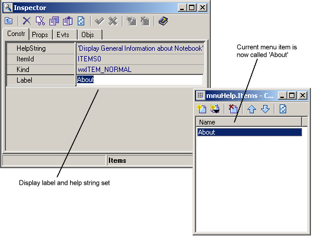

|  |
- The left hand side of the events pane shows the groups of
events which
are available. For the menuitem, there is only 'MenuEvent' group.
Select
this group using the mouse.
- The right hand side of the events pane now shows the events
in the selected
group. For the menu item, there is only one event EVT_MENU in the
'MenuEvent'
group. Doubleclick on this Event using the mouse.
- The bottom of the Events pane shows the event handlers in
your application
for the current component (the 'About' menu item). You should now have
a
new handler called OnMenuHelpAboutMenu. This is the name of the method
which will be invoked when the 'About' option is selected from the Help
menu.
- Notice the naming of the event handler. Boa Constructor
generates the names
in this manner. The event is the last part (Menu). The component is the
middle part and here it is the 'About' sub-component of the 'menuHelp'
component.
Finally, Boa Constructor follows the convention of prefixing all event
handlers with the word 'On'.
- Close the collection Editor.
|
 from the Editor
toolbar.
from the Editor
toolbar.